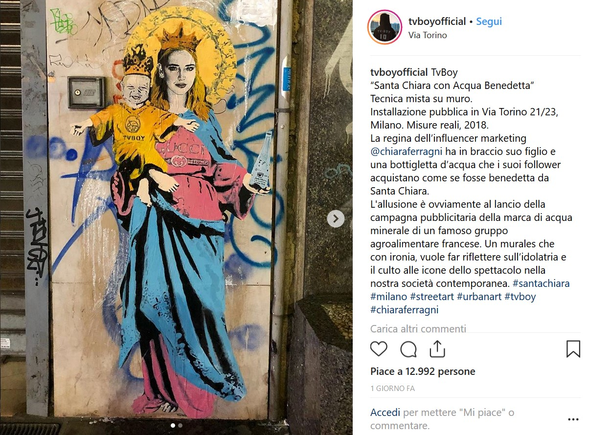

Scritto il 4 Febbraio 2020
Volete fare una foto con Chiara Ferragni ma non sapete dove trovarla?
La risposta è molto semplice: a pochi passi da Piazza Duomo, in via Torino 21/23.
Chiara sarà presente insieme al figlio Leone 24 ore su 24, 7 giorni su 7.
Vi starete chiedendo come può essere possibile… facile! Da qualche mese a questa parte, lo street artist Tvboy ha deciso di riservarle un posto speciale anche nel mondo dell’arte… o meglio dire: street art.
La Ferragni, che da anni ci sta facendo invidiare la sua casa a Los Angeles e il suo centinaio di capi firmati, non sembra volersi limitare al mondo del web… anzi… ce la ritroveremo ovunque!
Dalla sua linea di vestiti, alla bottiglietta d’acqua brandizzata con il suo logo, l’influencer è adesso alla portata di tutti.
Se state passeggiando in via Torino, passando da un negozio all’altro, potrete vedere il murales in questione. Vi basterà scattare una foto e postarla sui social e chissà… magari sarete tra i fortunati che riceveranno un suo like!
Attenzione però, non fate ingelosire il marito (Fedez) facendo troppe foto al murales!
La Ferragni viene raffigurata nelle vesti di una Madonna e tiene in braccio il figlio Leone nei panni di Gesù bambino.

Le critiche, che da sempre inseguono Chiara, hanno avuto campo libero anche questa volta:
“Era necessario dipingere anche i suoi piedi orrendi?”
“Perchè accostarla alla figura sacra della Madonna?”
“Non è too much?”
I piedi dell’influencer sono stati presi di mira per parecchi mesi, storia che non sembra voler finire.
Insieme ai piedi, le critiche si sono scagliate contro la bottiglietta di acqua che la stessa blogger ha brandizzato con il suo logo… forse per il prezzo eccessivo….o forse per invidia.
Ecco dove lo trovi: